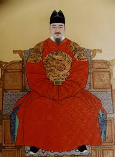

세종대왕
"유교적 왕도정치의 실현, 조선의 르네상스를 꽃피우다."

- 이름: 이도 (李裪) / 자: 원정 (元正)
- 가족 관계: 태종과 원경왕후 민씨의 셋째 아들 (충녕대군). 비(妃)는 소헌왕후 심씨.
- 즉위 배경: 맏아들 양녕대군이 자질 부족으로 폐위되면서 셋째임에도 세자로 책봉, 2개월 만에 태종의 양위를 받아 조선 제4대 국왕으로 즉위함
- 재위 기간: 1418년 ~ 1450년
- 대표 업적
- 독창적인 문자 시스템인 '훈민정음' 창제 (1443년)
- 장영실 등 과학자들을 지원하여 측우기·양부일구 등 과학 기구 제작
- 집현전 활성화를 통한 학문 발전
- 4군 6진 개척을 통한 영토 확장 및 국방 강화
1. 국정 운영 방식의 변화
- 육조직계제 -> 의정부서사제 (1436년): 재위 전반기에는 왕이 직접 업무를 챙기는 육조직계제를 실시하다가, 재위 후반기에는 의정부 정승들의 심의를 거쳐 왕이 재가하는 '의정부 서사제'로 전환함. 왕권과 신권의 조화를 추구한 왕도정치의 핵심입니다.
- 세자의 대리청정 (1445년): 건강 악화로 인해 맏아들 향(훗날 문종)에게 서무를 대리하게 하고, 자신은 문화 사업에 전념함.
2. 주요 업적 (카테고리별 정리)
- 최만리 등 일부 신하들의 강한 반대를 물리치고, 글을 모르는 백성들을 위해 독창적인 문자 '훈민정음'을 창제 및 공식 반포함.
- 《용비어천가》, 《삼강행실도》 등을 한글로 번역·보급하며 한자의 발음을 정리한 《동국정운》을 편찬함.
- 성리학적 제도를 정비하기 위해 궁중 학술 연구 기관인 집현전을 대대적으로 정비함.
- 젊고 유능한 학사들을 발탁하여 연구에만 전념하도록 '사가독서(연구 휴가제)' 등의 특전을 베풂. 이곳을 거친 학사들이 15세기 조선의 문물정비를 완수함.
- 천문·기상: 장영실, 이천 등에게 명하여 천문 관측대인 간의대, 표준 물시계 자격루, 세계 최초의 강우량 측정기 측우기 등을 발명함. 조선의 독자적 역법서인 《칠정산 내외편》을 편찬함.
- 농업·의학: 우리 풍토에 맞는 농법을 정리한 《농사직설》(1429년), 국산 약재 처방을 담은 《향약집성방》과 의학 백과사전인 《의방유취》를 편찬함.
- 인쇄·무기: 경자자, 갑인자 등의 금속활자를 주조하여 인쇄술을 비약적으로 발전시켰으며, 화약 무기 제작법을 담은 《총통등록》을 편찬함.
- 오례 정비: 국가의 다섯 가지 주요 의례(길례, 가례, 흉례, 빈례, 군례)를 정비하여 《세종실록오례》의 기반을 마련함.
- • 음악 정비: 박연을 등용하여 아악을 정비하고 편경·편종을 제작함. 세종이 직접 〈정대업〉, 〈보태평〉 등을 작곡했으며, 동양 최초의 유량악보인 '정간보'를 창안함
- 공법(貢法) 시행: 토지 비옥도(6등급)와 풍흉(9등급)에 따라 세금을 공정하게 걷는 세법 개정. 이 과정에서 백성 17만 명에게 여론조사를 실시하는 애민정신을 보임.
- 4군 6진 개척: 여진족을 정벌하여 압록강 유역에 4군, 두만강 유역에 6진(김종서)을 개척하여 현재 대한민국의 국경선(압록강~두만강)을 확정함.
훈민정음 창제 (1443년 창제, 1446년 반포)
학문과 인재 양성: 집현전 확대 개편 (1420년)
과학 기술과 인쇄술의 발전
유교 의례와 음악(예악) 정비
민생 안정과 영토 확장
3. 개인적인 슬픔과 육체적 고통
- 가족사의 비극: 즉위 초 부왕 태종에 의해 장인 심온이 처형되고 처가가 풍비박산 나는 아픔을 겪음. 말년에는 맏딸 정소공주, 다섯째 광평대군, 일곱째 평원대군을 먼저 떠나보내고 부인 소헌왕후마저 사별하는 깊은 슬픔을 겪음.
- 수많은 질병: 20대 후반부터 당뇨(소갈증), 안질 등 50여 건의 질병 기록이 실록에 나올 정도로 심각한 육체적 고통 속에서 업적을 이룩함
- 최후: 1450년 향년 54세를 일기로 서거함. 현재 경기도 여주의 영릉(英陵)에 안장되어 있음